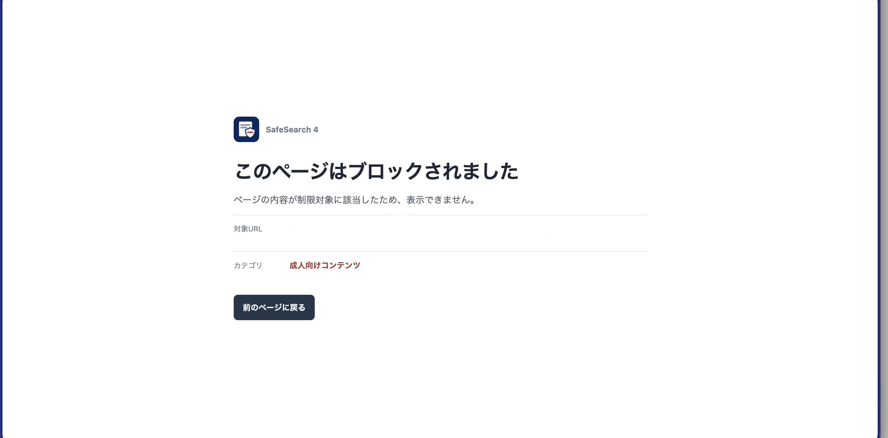

SafeSearch 4X-filtering system
ローカルで動く、Webフィルタリング。
URLとページ本文を、端末内で判定。外部の分類APIへ送らず、カテゴリとサイト別ルールに沿って閲覧を制限します。
公開タグ v1.0.0 ·
ブロック時には、理由とカテゴリを表示。画像を大きく見る
ブラウザー内で完結する判定
このデバイス
ローカル処理の流れ。外部の分類APIは使いません。
開発版のフィルタリング性能
内部独自ベンチマーク v1 · macOS開発版（ローカルDB＋E5）
公開中のEdge拡張機能の実測値ではありません。
カテゴリ一致を伴う拒否率
98.7%
成人・性的コンテンツ
74.3%
賭博
68.8%
出会い・勧誘
比較表は横にスクロールできます。
| カテゴリ | SafeKids Search 12024 | SafeKids Search 22024 | SafeKids Search 32025 | SafeSearch 4 開発版2026 |
|---|---|---|---|---|
| 成人・性的コンテンツ | 2.0% | 9.2% | 26.3% | 98.7%151 / 153件 |
| 暴力・犯罪 | 未対応 | 0.0% | 0.0% | 36.7%11 / 30件 |
| 賭博 | 0.0% | 8.6% | 0.0% | 74.3%26 / 35件 |
| 薬物・酒・たばこ | 0.0% | 17.6% | 0.0% | 20.6%7 / 34件 |
| 出会い・勧誘 | 0.0% | 0.0% | 0.0% | 68.8%22 / 32件 |
| SNS・掲示板 | 0.0% | 0.0% | 0.0% | 28.0%14 / 50件 |
| 自傷・自殺 | 未対応 | 未対応 | 未対応 | 未対応 |
| 差別・嫌がらせ・暴言 | 0.0% | 未対応 | 未対応 | 未対応 |
| 性教育・健康情報 | 未対応 | 0.0% | 未対応 | 37.5%6 / 16件 |
SafeKids Search 1・2・3は非公開のVIUKプロダクト。SafeSearch 4はVIUK-Lightの開発版です。一部カテゴリには未観測ケースがあります。
数値の定義と測定条件
対応していて観測できた拒否期待ケースのうち、期待された理由カテゴリと一致してブロックした割合。
macOSネイティブの開発版で、ローカルカテゴリDB・URLルール・ローカルE5を使った内部評価です。未対応や未観測のケース、許可期待ケースは分母に含みません。許可すべきページを誤って拒否する割合を示す値ではありません。
SafeSearch 4列には、保存済み集計と照合した一致件数／観測件数も併記しています。原表のSafeSearch 4列は、この開発版の結果です。本ページでは測定対象に合わせて「開発版」と表記しています。
このデバイス
閲覧ルールを決める。
カテゴリ別に設定
制限したいカテゴリを選択。
設定はいつでも変更できます。
サイトごとに設定
ホスト名やURLを指定して、許可・ブロックの例外を登録できます。
現在の公開状況
v1.0.0
公開タグ ·
開発状況をGitHubで公開しています。
- 確認済み
- Microsoft Edge · macOS
- 対応対象
- Microsoft Edge · Windows（実機確認前）
- 判定方式
- ローカルルール
- 拡張機能の表記
- 0.1.0
- ライセンス
- MIT License
判定する範囲
URLと、読み取り可能なメインページの本文が対象です。画像・動画の中身や埋め込みフレーム内の本文は判定しません。
内容を確認できない場合も、理由を示してページの表示を止めます。現行版はローカルルールによる初期版で、すべての制限対象ページを検出できるものではありません。
公開ソースの状態を確認